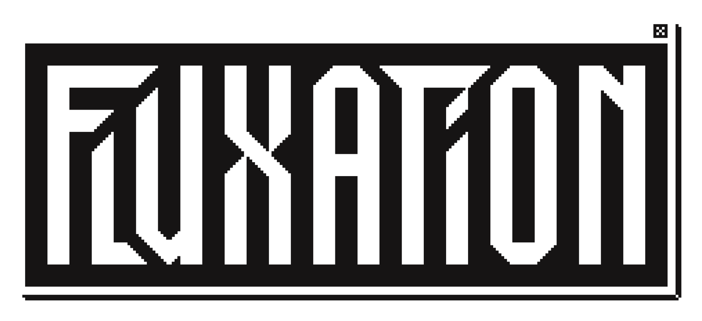
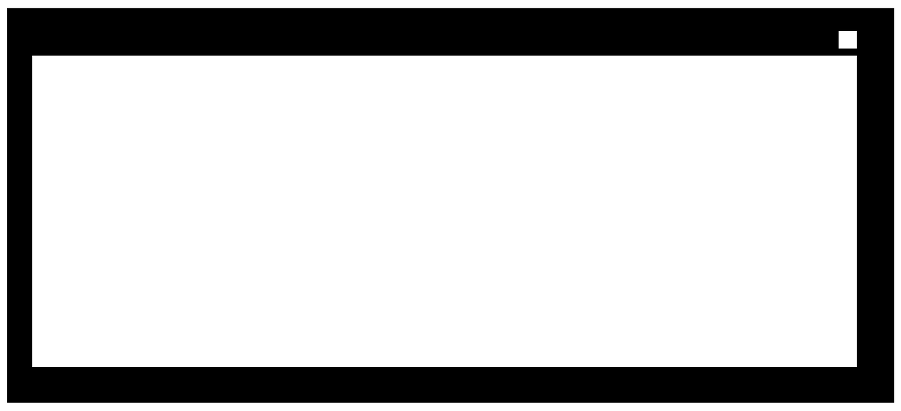
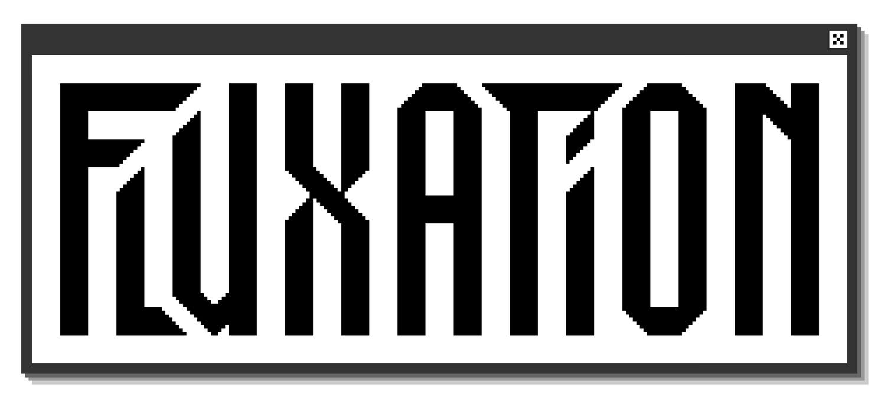
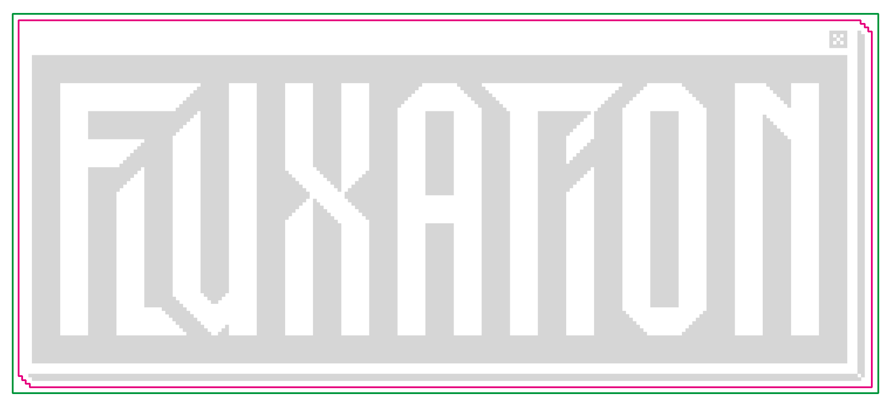
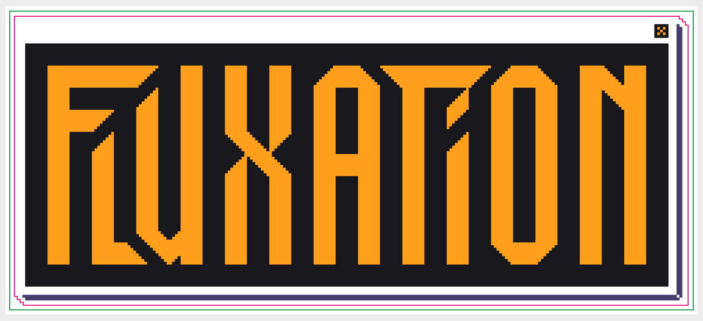
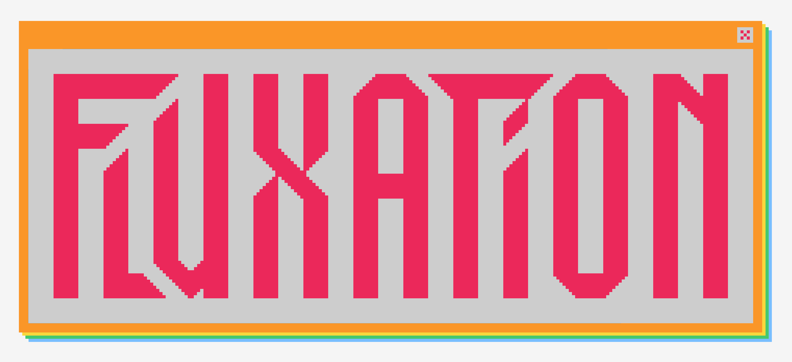

LG-540: Fluxation sticker
Print file for the Fluxation sticker on the Roland LG-540: black on retroreflective film, a white window frame, and a stepped gloss height map built up in layers. 23 November 2026.
The file
fluxation_print.pdf(91 KB): colour, white, gloss and both cut lines in one file, built the same way aslentV64_print.pdf.- Size at 100%: the sticker is 6.02 × 2.59 in, the backing piece 6.11 × 2.69 in, the page 6.70 × 3.27 in. Change Scale in VersaWorks for another size.
- For the gloss check, test strips and what to do when something looks wrong, use the Jumperless sticker guide.
1. What is in the file




CutContour (kiss cut), green is PerfCutContour (perf cut).| Layer | Spot colour | What the printer does with it | Came from |
|---|---|---|---|
| CMYK | none, ordinary CMYK | Prints the black. | |
| RDG_WHITE | RDG_WHITE | Prints white ink in that shape. | printWhite, plus the white flood drawn in Illustrator |
| RDG_GLOSS | RDG_GLOSS | Prints gloss ink, more where the picture is darker. | Clear Emboss copy |
| CutContour | CutContour | Kiss cut: the sticker outline, with its stepped corners. | Score |
| PerfCutContour | PerfCutContour | Perforated cut through the backing, about 1 mm outside the kiss cut. | Cut |
2. What ends up where

- The lettersBare film under the thickest gloss. Reflective and raised.
- Frame, title bar and marginWhite ink, so not reflective. The margin runs past the kiss cut.
- The panelBlack straight on the film, no gloss. Flat black.
- The drop shadowBlack over white, with thin gloss steps.
The gloss height map

| Level | Colour above | Where |
|---|---|---|
| 100% | red | The letters and the dots in the close box. |
| 80% | orange | The title bar and the window frame. |
| 60% and 40% | yellow, green | The two steps of the black drop shadow. |
| 20% | blue | The thin white line outside the shadow. |
Every gloss coat lays these proportions, so the letters always end up highest and the outer line lowest. More coats make the whole map taller.
3. Print it with layered gloss
This is the layered job that worked for the Jumperless sticker on 23 November, with this file in place of that one. Every layer is a copy of the same job.
The layered job, top row prints last
Embossing (v), one copy per gloss layer- Do the gloss check at the printer first.
- Drag
fluxation_print.pdfinto the job list. Special Items should show four markers: the two cut lines, white and gloss. - Set Scale and the position now, before duplicating, so every copy gets the same.
- Duplicate the job until there is one copy for white, one for colour and one for each gloss layer.
- Give the white and colour copies the same modes as in the Jumperless layered job.
- Gloss copies: in Quality, set Media Type to Special Effects and Mode to
Embossing (v). - Select all the copies, right-click, Generate Layered Job. Check the order: white, colour, then gloss on top.
- Set Print & Cut in Cut Controls on the top copy. Only the top copy's cut lines are used.
Three Embossing (v) layers at Overprint 1 worked on the Jumperless sticker, but came out thinner than wanted. For more height there are two ways:
- More copies of the gloss layer. This is the way already proven.
- A higher Overprint on one gloss copy. In Quality open Details, tick Ignore Default Settings, then set Overprint. Not tried yet on this printer.
Roland: Overprint in VersaWorks 7 · layered jobs
4. What was changed from the source files
The plates come from fluxation_Sticker_gloss.psd. The white flood and the two outlines come from fluxation_Sticker_gloss.ai.
- The two outlines were given jobs. Score became the kiss cut and Cut became the perforated cut. If they are meant the other way round, the file needs rebuilding.
- The white flood was trimmed. In Illustrator it ran to the edge of the page. It now stops 1 mm outside the perf cut. Nothing inside the cut changed.
- The outlines were squared up. They now sit on the artwork's pixel grid, within about 0.1 mm of the Illustrator paths.
- The white mask is the Photoshop one. It is newer, and has one more block of white at the inner corner of the shadow than the Illustrator copy.
- The black is as drawn: C75 M68 Y67 K90.
Written 23 November 2026.